Plataforma web multi-sede de venta y control para micro-cadenas de restaurantes
Prototipo funcional, evidencia de pruebas y despliegue en la nube (AWS)
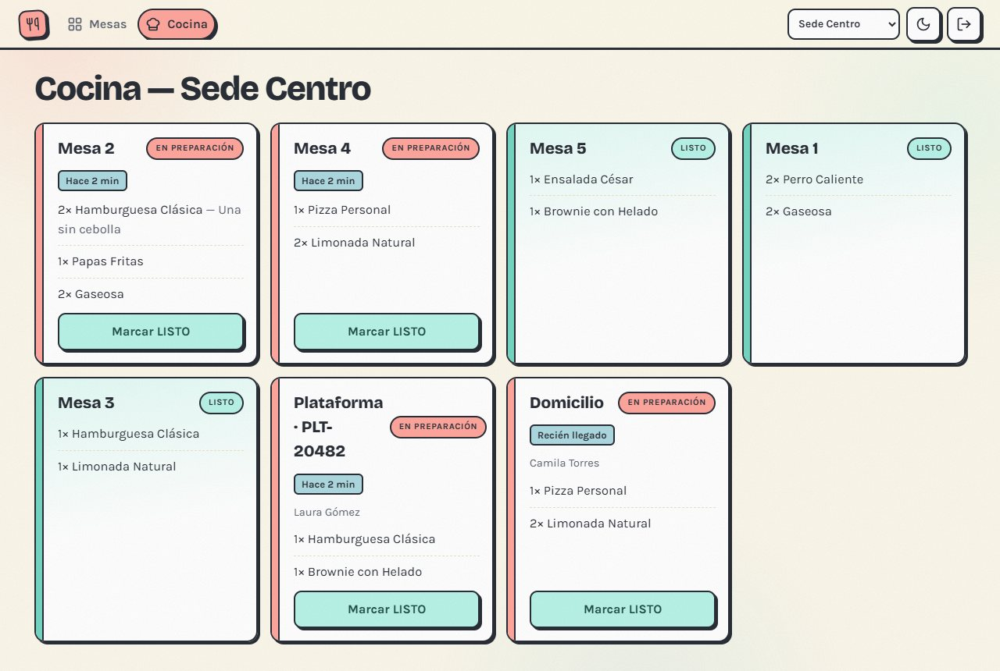
El 24 de agosto de 2026 se propuso Comanda Central: un servicio telemático (SaaS) para micro-cadenas de restaurantes de 2 a 8 sedes en Bogotá. Las sedes, los comensales y el dueño se conectan por internet a un servidor central que registra cada venta, la valida fiscalmente en segundo plano, mantiene sincronizadas las sedes, entrega un panel consolidado en tiempo real y deja seguir vendiendo cuando una sede pierde la conexión.
Este informe presenta el resultado: un prototipo funcional construido por fases entre el 17 de septiembre y el 19 de noviembre de 2026. Implementa el flujo de los ocho casos de uso de la propuesta y la arquitectura telemática de sus secciones 5 y 6, y corre igual en un computador con Docker Compose y en una beta pública en AWS con dominio, HTTPS, despliegue continuo, respaldos y monitoreo. Las dos integraciones externas, la DIAN y Rappi, se implementaron contra simuladores locales por regla del proyecto: no hay habilitación ante la DIAN ni acceso aprobado a la API de Rappi.
Siguen pendientes las pruebas de carga y la medición de la latencia real desde Bogotá (Fase 19 del plan), la consolidación del costo real consumido (Fase 20) y algunos ajustes menores que se listan en la sección 10. La integración real con la DIAN y con Rappi queda fuera del alcance del prototipo.
El dueño de una micro-cadena opera con información fragmentada. Cada sede registra sus ventas en un sistema local, los pedidos de las plataformas de domicilio llegan por portales separados y la facturación electrónica exige validación en línea ante la DIAN. Consolidar el resultado del día es trabajo manual, propenso a errores, y no permite decidir a tiempo. Además, buena parte del software del mercado deja de vender cuando falla internet.
El benchmark de la propuesta comparó tres soluciones vigentes en Colombia (Gestro, Fudo y Siigo POS Gastrobar). Las tres dependen de conexión permanente y tratan la multi-sede como un plan superior, no como el centro del diseño. Comanda Central se diferencia en esos dos puntos: operación sin conexión con sincronización automática y consolidación multi-sede nativa. Por eso la solución es un servicio telemático puro: las sedes no tienen servidor propio, sino que son clientes de un servidor central en la nube, y el comensal entra por QR desde el navegador, sin instalar nada.
Objetivo general. Construir y desplegar un prototipo funcional de Comanda Central que demuestre de punta a punta los servicios telemáticos planteados en la propuesta: tiempo real entre las áreas de la sede, validación fiscal asíncrona, operación sin conexión, aislamiento entre clientes y consolidación multi-sede.
Objetivos específicos.
El alcance es el de la propuesta (§1.4): punto de venta web por sede (caja, comandas a cocina y mesas), documento equivalente electrónico, menú digital por QR, domicilio por web, recepción de pedidos de plataformas por API y panel consolidado con reportes. Como en la propuesta, quedan fuera la aplicación móvil de descarga y la realidad aumentada. También queda fuera el hardware de sede: impresora de comandas, tablet dedicada y router con respaldo 4G.
Tres reglas guiaron el trabajo:
// DECISIÓN DE PROTOTIPO. Lo que la propuesta pide y el prototipo no implementa de verdad queda como un punto de extensión marcado // TODO PRODUCCIÓN..env en local y SSM Parameter Store en la nube), y .env.example documenta cada variable.El trabajo se organizó en fases secuenciales: cada fase es un commit independiente, con una pausa de revisión antes de pasar a la siguiente. Las Fases 0 a 6 construyeron el flujo principal. Desde la Fase 7 el trabajo se dividió en dos partes paralelas, cada una en su rama. Antes de cada ronda se escribieron contratos de integración (propiedad de archivos, formato de eventos y endpoints compartidos) para que las partes no se pisaran. Todo se integró a main mediante pull requests revisados por el otro integrante (12 en total), y cada ronda cerró con una prueba de integración de punta a punta.
El desarrollo se apoyó en un asistente de programación con IA (Claude Code). Su contexto persistente fueron las reglas del proyecto, escritas en el archivo CLAUDE.md del repositorio: no inventar funcionalidades, marcar decisiones y stubs, y trabajar por fases con pausa para revisión.
| Ronda y fechas | Parte 1 — Miguel Jiménez operación interna, datos y reportes | Parte 2 — Dikersson Cañón canales, integraciones e infraestructura |
|---|---|---|
| Base 17–21 sep | Fases 0–6: entorno dockerizado, modelo de datos con Prisma, login con JWT y roles, API REST, WebSocket con /mesas y /cocina, cobro con documento fiscal simulado y /caja, reporte de ventas y Swagger. | |
| Ronda 1 27 sep | 7 multi-sede real · 8 rangos de numeración fiscal · 9 panel multi-sede (CU-06) · 10 catálogo centralizado (CU-08) | 7B menú QR (CU-03) · 8B domicilio web (CU-04) · 9B modo sin conexión del mesero (CU-07) |
| Ronda 2 4–19 oct | 11 inventario y recetas · 12 Row Level Security · 13 réplica de lectura · 14 reportes por día/mes, producto y franja horaria | 11B cola de trabajos y DIAN simulada · 12B pedidos de plataforma (CU-05) · 13B Nginx con TLS 1.3, HTTP/2, WSS y dos instancias · 14B correo SMTP |
| Ronda 3 26–27 oct | 15 deudas técnicas · 16 cobro y numeración sin conexión · 17 sede asignada al usuario · 18 respaldos y retención | 15 prueba de integración final · 16B fotos de producto · 17B imágenes de producción · 18B CI/CD · 19B despliegue en AWS · 20B subdominio por cadena · 21B monitoreo |
| Migración 17–19 nov | Migración real a AWS y correcciones encontradas en ella; selector de sede para usuarios sin sede fija; gestión de usuarios con sede asignada (/usuarios). | |
Fuente: historial de commits del repositorio y planes docs/fases-siguientes*.md.
La Tabla 2 resume cómo quedó cada caso de uso de §3.1. "Implementado" significa que el flujo corre de punta a punta con datos reales en la base. "Con simulador" significa que el flujo corre completo, pero el sistema externo es un simulador local.
| Caso de uso | Estado | Cómo quedó | Ver |
|---|---|---|---|
| CU-01 Pedido en mesa | Implementado | El mesero arma el pedido en /mesas (tablet o navegador) y lo envía con un UUID generado en el cliente; la comanda llega a /cocina por WebSocket sin recargar. Sin impresora de comandas (hardware fuera de alcance). | §6.1, Fig. 5–6 |
| CU-02 Cobro y documento fiscal | Con simulador | El cobro es una sola transacción (pago, consecutivo por sede, pedido pagado y mesa libre). Un worker genera el XML, lo guarda en el almacén de objetos y lo valida en segundo plano contra una DIAN simulada, con reintentos; el estado llega a la caja en vivo. | §6.2, Fig. 7 |
| CU-03 Menú QR | Implementado | QR por mesa generado en el navegador; menú público sin login ni aplicación, con fotos optimizadas (WebP de 400 y 800 px) y límite de tasa en el proxy. | §6.3, Fig. 8 |
| CU-04 Domicilio web | Implementado | Pedido desde el menú público, sin JWT e idempotente por UUID; llega a cocina como "Domicilio" y el cliente recibe el comprobante por correo. Sin pago en línea ni seguimiento del repartidor. | §6.4, Fig. 9 |
| CU-05 Pedido de plataforma | Con simulador | API autenticada con X-Api-Key, idempotente por el id del pedido en la plataforma, con acuse por webhook desde el worker. La "plataforma" es un simulador con formato propio. | §6.5, Fig. 6 |
| CU-06 Panel multi-sede | Implementado | /panel consolida las sedes por día o mes y canal, por producto y por franja horaria, en hora de Bogotá; lee de la réplica, se actualiza en vivo y envía un resumen diario por correo. | §6.6, Fig. 10 |
| CU-07 Operación sin conexión | Implementado | PWA con service worker. Mesero y caja encolan en IndexedDB y sincronizan con POST /sync, idempotente por UUID. Los consecutivos fiscales sin red salen de bloques reservados por dispositivo. | §6.7, Fig. 11 |
| CU-08 Catálogo centralizado | Implementado | /catalogo (administrador): un cambio de producto, precio o foto se hace una vez y llega a las tres sedes; /mesas lo recibe en vivo y el menú QR al cargarse. | §6.8, Fig. 12 |
CU-07: la operación sin conexión del mesero se verificó en un navegador real; la de la caja, con pruebas de integración (ver §6.7).
Los simuladores reproducen lo que importa para el servicio telemático (tiempos de respuesta, caídas, rechazos, reintentos e idempotencia) sin conectarse a sistemas reales. Todo documento y correo del prototipo dice explícitamente que es simulado y sin validez fiscal.
| Elemento | En la propuesta | En el prototipo |
|---|---|---|
| Proveedor tecnológico DIAN | Validación en línea del documento equivalente electrónico | ProveedorDianSimuladoService con latencia (2 s), tasa de caída (20 %) y tasa de rechazo (10 %) configurables por variables de entorno. Una caída se reintenta con backoff; un rechazo es de negocio y no se reintenta. |
| Documento XML | Documento firmado ante la DIAN, con CUDE/CUFE | XML propio y mínimo, sin firma digital (no sigue UBL 2.1) y sin CUDE/CUFE, que no aplica a un documento simulado. |
| API de Rappi | Pedidos de plataforma por API de aliados | Simulador con formato JSON propio (en inglés, distinto del de Comanda), página /simulador-plataforma y webhook de acuses. No copia la API de Rappi: no hay acceso aprobado. |
| Entrega de correo | SMTP hacia comensales y dueño | En local, Mailpit (captura los correos y no los entrega). En la beta, Amazon SES en modo sandbox, que solo entrega a direcciones verificadas. |
La propuesta fija la arquitectura y el comportamiento, pero no las herramientas concretas. Estas decisiones son del equipo y están marcadas como // DECISIÓN DE PROTOTIPO donde aplican:
Usuario.sedeId, opcional) y baja lógica de usuarios y productos. Ninguno de los dos está en el ER de la propuesta.EXISTS contra la tabla padre en las tablas hijas, en vez de copiar cadena_id en todas (§5.3)./inventario.America/Bogota para los reportes, en vez de una por sede.La Figura 1 muestra el prototipo tal como corre. Todo el tráfico de los clientes entra por un único punto, Nginx, que termina TLS y reparte las peticiones entre dos instancias del backend. Las instancias no guardan estado de sesión: la identidad viaja en el JWT y los eventos en tiempo real se reparten por Redis, así que cualquier instancia puede atender a cualquier cliente.
El trabajo que depende de terceros (validación fiscal, acuses a plataformas y correo) sale del flujo de la petición. El backend lo deja en colas y lo procesa un proceso aparte, el worker, que usa el mismo código del backend. PostgreSQL guarda los datos de negocio, una réplica de lectura atiende los reportes y el almacén de objetos (API S3) guarda los XML fiscales y las fotos de producto.
Cada componente de §5.1 tiene una contraparte concreta. Salvo donde se indica, el prototipo usa una sola instancia de cada pieza.
| Componente (§5.1) | En el prototipo (Docker Compose) | En la beta (AWS) |
|---|---|---|
| Proxy inverso (Nginx) | Contenedor nginx: solo TLS 1.3, HTTP/2, gzip, límite de tasa en rutas públicas y balanceo entre instancias. | El mismo, en los puertos 80 y 443, con certificado de Let's Encrypt, redirección a HTTPS y HSTS. |
| CDN | No hay. Nginx guarda en caché las fotos del menú. | Preparado como opción: CloudFront delante del bucket de fotos (URL_PUBLICA_IMAGENES). |
| Servidores de aplicación ×2 | backend-1 y backend-2 (NestJS: API REST y WebSocket), con Redis como canal común de eventos. | Dos contenedores en la misma EC2. |
| Trabajador asíncrono y cola | worker con BullMQ: colas fiscal, de acuses a plataformas y de correo, con reintentos y backoff. | Igual. |
| Base de datos y réplica | postgres (primario, con RLS) y postgres-replica (streaming), solo para reportes. | Contenedores con volúmenes en el disco EBS y respaldo diario a S3. |
| Caché y Pub/Sub (Redis) | redis: adaptador de Socket.IO y colas. | redis con persistencia AOF. |
| Almacén de objetos | MinIO (API S3): XML fiscales y fotos de producto. | Amazon S3, con tres buckets privados (documentos, fotos y respaldos). |
| Monitoreo y respaldos | Logs de los contenedores; servicio respaldo con pg_dump programado. | CloudWatch (logs, métricas y alarmas) y respaldo diario a S3 con retención. |
La Figura 2 sigue el flujo estrella de la propuesta, del pedido en la mesa al documento fiscal. Hay dos transacciones en la base (pasos 2 y 8). Hay tres empujes del servidor al cliente (pasos 4, 6 y 16) que evitan que alguna pantalla tenga que preguntar. Y el trabajo con el tercero (pasos 10 a 15) ocurre después de que la caja ya recibió su respuesta.
El backend es un solo programa dividido en módulos con fronteras explícitas: cada módulo importa solo lo que el otro exporta. Así se puede desplegar como una unidad hoy y extraer un módulo como servicio cuando haya una razón para escalarlo por separado, como planteó la sustentación. El worker es otro punto de entrada (src/worker.ts) sobre el mismo código, con sus propios módulos de procesamiento.
| Módulo | Responsabilidad | Fase |
|---|---|---|
AuthModule | Login con JWT, guardas de rol, usuario vigente (rol, sede y estado leídos de la base) | 2, 17 |
UsersModule | Usuarios de la cadena: crear, asignar sede y rol, cambiar contraseña, desactivar | nov. |
BranchesModule · TablesModule | Sedes y mesas de la cadena | 3, 7 |
CatalogModule | Catálogo centralizado de productos, con baja lógica | 3, 10 |
ImagenesProductoModule · StorageModule | Fotos de producto procesadas con sharp; almacén de objetos S3/MinIO compartido | 16B |
OrdersModule | Pedidos, máquina de estados y pedido de domicilio público | 3, 8B |
PaymentsModule | Cobro, consecutivo fiscal atómico y bloques para cobrar sin conexión | 5, 8, 16 |
RealtimeModule | Gateway de Socket.IO: salas por sede y por cadena | 4 |
ReportsModule | Ventas del día, consolidado, ventas por producto y por franja horaria | 6, 9, 14 |
PublicMenuModule | Menú QR sin autenticación | 7B |
SyncModule | POST /sync: lotes de pedidos y pagos hechos sin conexión | 9B, 16 |
InventoryModule | Insumos, recetas y movimientos de inventario | 11 |
FiscalModule | Cola fiscal, XML, DIAN simulada y reenvío del resultado a la caja | 11B |
IntegracionesModule | Pedidos de plataforma por API, acuses y simulador | 12B |
MailModule | Comprobantes y resumen diario por SMTP | 14B |
TenancyModule | Resolución de la cadena por subdominio (Host) | 20B |
Health · Monitoring · Prisma | Salud real de Postgres y Redis; métricas de las colas; acceso a datos con conCadena() y cliente de la réplica | 0, 12, 13, 21B |
El frontend es una aplicación web progresiva (PWA) en React, con service worker y manifiesto, para que la sede funcione sin red (§6.7). Llama a la API por rutas relativas, del mismo origen que la página, y abre un único socket por pantalla. La interfaz usa la paleta del equipo como tokens de color, con modo claro y oscuro.
| Ruta | Quién la usa | Función |
|---|---|---|
/mesas | Mesero, administrador | Estado de las mesas, toma de pedidos con catálogo, códigos QR por mesa y cola sin conexión |
/cocina | Cualquier usuario de la sede | Tablero de comandas (KDS) en vivo, con alerta de demora; marca pedidos como LISTO |
/caja | Cajero, administrador | Pedidos listos para cobrar, cobro, recibo con estado DIAN en vivo, XML y cobro sin conexión |
/panel | Administrador | Consolidado multi-sede, ventas por producto y por franja; envío del resumen diario |
/catalogo · /inventario · /usuarios | Administrador | Productos y fotos; insumos, existencias y recetas; usuarios con rol y sede |
/menu/:cadena/:sede | Comensal (público) | Menú QR por sede y pedido a domicilio; por subdominio, /menu/:sede |
/simulador-plataforma | Simulador | Plataforma de domicilios simulada: envía pedidos por API y muestra los acuses |
La Tabla 7 recorre los protocolos de §5.2 de la propuesta y muestra cómo se materializó cada uno. Las subsecciones siguientes dan el detalle y la evidencia.
| Protocolo | Uso según la propuesta | Implementación |
|---|---|---|
| HTTPS (TLS 1.3 sobre HTTP/2) | Todo el tráfico cliente-servidor cifrado | Nginx acepta solo TLS 1.3 y negocia HTTP/2 por ALPN; en la beta redirige HTTP a HTTPS (301) y envía HSTS. |
| WebSocket (WSS) | Estado en tiempo real dentro de la sede | Socket.IO por /socket.io/ con upgrade a WSS; salas por sede y por cadena; backplane en Redis. |
| DNS | Dominio y subdominio por cadena | DuckDNS: dominio de la beta y subdominio demo. hacia la IP elástica; la cadena se resuelve por el Host. |
| REST / SOAP sobre HTTPS | Integración con DIAN y Rappi | REST/JSON: API de plataformas con X-Api-Key y acuse por webhook (simulados); DIAN simulada desde el worker. |
| SSH | Administración remota solo con llaves | Sustituido por AWS Systems Manager Session Manager: el servidor no abre el puerto 22. |
| NTP | Reloj sincronizado para marcas fiscales y orden de eventos | chrony con Amazon Time Sync Service en la EC2; las marcas de tiempo las pone el servidor. |
| SMTP | Comprobantes y resúmenes diarios | Cola de correo con nodemailer: Mailpit en local y Amazon SES (587, STARTTLS) en la beta. |
| Syslog / métricas | Registro y telemetría centralizados | Logs JSON de todos los contenedores en CloudWatch Logs; métricas de colas y del sistema; alarmas. |
Nginx es el único punto de entrada y la única configuración TLS del sistema: ssl_protocols TLSv1.3, http2 on y compresión gzip. En la beta, además, el puerto 80 redirige a HTTPS (301), las respuestas llevan Strict-Transport-Security por un año y los archivos estáticos con hash se sirven con caché inmutable. HTTP/2 importa sobre todo para el menú QR, que trae muchas imágenes pequeñas multiplexadas en una sola conexión. Un efecto colateral necesario: un service worker solo funciona bajo HTTPS, así que el certificado es requisito de la PWA.
La verificación se hizo desde ambos extremos el 20/10/2026, contra el entorno local:
$ echo | openssl s_client -connect localhost:8443 -tls1_3 New, TLSv1.3, Cipher is TLS_AES_256_GCM_SHA384 $ echo | openssl s_client -connect localhost:8443 -alpn h2 -tls1_3 ALPN protocol: h2 $ echo | openssl s_client -connect localhost:8443 -tls1_2 # TLS 1.2 rechazado ... tlsv1 alert protocol version ... SSL alert number 70 # Navegador real (Edge controlado por DevTools), carga completa de la aplicación: protocolos en las 55 respuestas de la carga: ["h2"]
Además, se capturó con Wireshark/tshark el tráfico de un inicio de sesión y de la creación de un pedido: 109 tramas, de las cuales 37 son registros TLS. El Server Hello negoció la versión 0x0304 (TLS 1.3), tshark no pudo reconocer HTTP por encima de TLS y ninguna trama contiene en claro la contraseña, el token ni el encabezado Authorization. El canal está cifrado de verdad; no es solo el candado del navegador.
Solo el tramo navegador–Nginx va cifrado. Dentro de la red de Docker (Nginx–backend, backend–PostgreSQL, worker–Redis), el tráfico viaja en claro. En producción se cifraría también (mTLS o una red privada administrada).
La propuesta exige que la comanda aparezca en cocina "sin recargar la página". Con polling, el cliente pregunta cada N segundos: si N es grande la comanda tarda, y si es pequeño se satura el servidor con preguntas que casi siempre responden "nada nuevo". Con WebSocket la conexión queda abierta (full-duplex) y el servidor empuja el evento en el instante en que ocurre.
El handshake exige el JWT. Lo valida un middleware de Socket.IO que además carga de la base la cadena y la sede vigentes del usuario; el cliente recibe la confirmación de conexión solo después, así que, cuando la pantalla pide unirse a su sede, el servidor ya sabe quién es. Al conectarse, cada socket entra a la sala de su cadena (cadena:{id}) y, cuando la pantalla lo pide, a la de una sede (sede:{id}). Para entrar a una sede, esta debe ser de su cadena y, si el usuario tiene sede asignada, debe ser la suya. Al reconectarse, el cliente vuelve a unirse a su sala y recarga los pedidos que pudo perder. Con dos instancias, el adaptador de Redis (pub/sub) hace que un evento emitido en una instancia llegue a los sockets de la otra. Nginx da afinidad por IP (ip_hash) a /socket.io/, porque el handshake inicial por long-polling debe llegar siempre a la misma instancia.
| Evento | Sala | Se emite cuando | Lo escucha |
|---|---|---|---|
comanda:nueva | sede:{id} | Entra un pedido a cocina por cualquier canal: mesa, sincronización, domicilio o plataforma | /cocina, /caja, /mesas |
pedido:actualizado | sede:{id} | Cambia el estado de un pedido (LISTO, PAGADO) | /mesas, /caja, /cocina |
documento:actualizado | sede:{id} | El worker terminó de validar un documento fiscal; cada instancia lo emite solo a sus sockets para no duplicarlo | /caja |
venta:registrada | cadena:{id} | Se completa un cobro | /panel |
catalogo:actualizado | cadena:{id} | Se crea, edita o desactiva un producto | /mesas |
inventario:actualizado | cadena:{id} | Movimiento manual o descuento automático por receta | /inventario |
Las operaciones que no necesitan empuje del servidor van por REST sobre HTTPS: 44 rutas agrupadas por recurso (Tabla 9; lista completa en el Anexo A), documentadas de forma interactiva con Swagger en desarrollo y apagadas en producción. Cuatro reglas aplican a todas:
404 y no 403, para no confirmar que existe.X-Api-Key. En la base solo queda el hash SHA-256 de la llave, y la cadena sale de la integración, no del cuerpo del pedido.| Grupo | Rutas principales | Acceso |
|---|---|---|
| Autenticación y usuarios | POST /auth/login, GET /auth/me, /usuarios, /cadena | Público / JWT / administrador |
| Sedes y catálogo | /sedes, /sedes/:id/mesas, /productos, /productos/:id/imagen | JWT; escritura solo administrador |
| Operación de la sede | /pedidos, /pagos, /pagos/rangos-offline, /sync, /documentos-fiscales/:id/xml | Mesero, cajero o administrador según la ruta |
| Canales públicos | GET /menu/:cadena/:sede, /menu/imagenes/*, POST /public/pedidos/domicilio | Público, con límite de tasa |
| Integraciones | /integraciones/plataformas/pedidos, /integraciones/plataformas/catalogo | X-Api-Key |
| Inventario, reportes y correo | /insumos, /productos/:id/receta, /inventario/movimientos, /reportes/*, /correo/resumen-diario | Administrador (ventas del día: cajero) |
Nginx define dos grupos de servidores sobre las mismas instancias: /api/ se reparte en round robin y /socket.io/ usa ip_hash. Con max_fails=1 y fail_timeout=10s, una instancia que no responde sale del balanceo, y resolve vuelve a consultar el DNS interno de Docker para notar cuando regresa. Las rutas públicas tienen límite de tasa por IP: 5 peticiones por segundo con ráfaga de 10 para el menú y el domicilio, y 30 por segundo para las fotos. Al pasarse, Nginx responde 429.
Prueba de caída (20/10/2026): con backend-2 detenido, la primera petición tardó 2 s porque Nginx intentó la instancia caída y reintentó en la otra dentro de la misma petición. Las siguientes fueron directas:
172.19.0.1 "GET /api/health HTTP/1.1" 200 -> 172.19.0.8:3000, 172.19.0.7:3000 (2.016 s) 172.19.0.1 "GET /api/health HTTP/1.1" 200 -> 172.19.0.7:3000 (0.006 s)
Un KDS conectado a la instancia detenida se reconectó a la otra y siguió recibiendo comandas. Con las dos instancias detenidas, la API responde 502: la tolerancia a fallos cubre la caída de una instancia, no de ambas. La prueba de punta a punta (§8.2) verifica en cada ejecución que, de 40 peticiones seguidas al menú, algunas reciben 429.
La propuesta resuelve cada cadena por un subdominio, por ejemplo lacadena.comandacentral.co. En el prototipo, cada cadena puede tener un subdominio (Cadena.subdominio), y el backend resuelve la cadena por el encabezado Host en las rutas públicas y en el login. Por el subdominio de una cadena, el menú QR y el domicilio solo aceptan esa cadena (otra devuelve 404) y el login solo acepta a sus usuarios (otro recibe el mismo 401 de una clave errada). Los QR de las mesas apuntan al subdominio, con la URL armada por el backend. Las rutas privadas siguen resolviendo la cadena por el JWT.
En local se prueba con *.localhost, que los navegadores resuelven solos. En la beta, DuckDNS publica el dominio del servicio y el subdominio de la cadena de demostración hacia la IP elástica de la instancia, y el certificado cubre ambos nombres. Verificación del 19/11/2026:
$ nslookup comanda-dk26.duckdns.org 8.8.8.8 Address: 34.228.46.136 $ nslookup demo.comanda-dk26.duckdns.org 8.8.8.8 Address: 34.228.46.136 $ curl http://34.228.46.136/api/health # chequeo por el puerto 80 (ver §7.8) {"status":"ok","dependencies":{"postgres":"up","redis":"up"},...} # certificado: CN=comanda-dk26.duckdns.org · SAN: comanda-dk26.duckdns.org, demo.comanda-dk26.duckdns.org # vigencia: 17/11/2026 – 15/02/2027 (90 días, renovación automática programada)
El backend nunca envía correo directamente: encola el trabajo y lo envía el worker por SMTP con nodemailer, con reintentos. Hay dos correos:
/panel también se dispara a mano.En local, Mailpit muestra los correos en una bandeja web sin entregarlos (Figura 9). En la beta, Amazon SES recibe por el puerto 587 con STARTTLS; en modo sandbox solo entrega a direcciones verificadas, lo cual basta para la demostración.
/comanda/beta, con un stream por contenedor y retención de 7 días. Backend y worker escriben JSON estructurado, que se consulta por campo con Logs Insights.La propuesta eligió una base relacional porque una venta toca a la vez pedido, detalle, pago, documento fiscal e inventario, y debe confirmarse completa o no confirmarse (§6.1). El prototipo lo cumple con dos transacciones:
POST /pedidos, /sync, domicilio o plataforma) inserta el pedido, su detalle y las salidas de inventario por receta en una sola transacción, y ocupa la mesa.POST /pagos) verifica que el pedido esté LISTO y que el monto coincida con el total. Luego crea el pago, toma el consecutivo de la sede con un UPDATE atómico, crea el documento fiscal en PENDIENTE, pasa el pedido a PAGADO y libera la mesa. Si algo falla, no queda nada a medias.Solo después de confirmar el cobro se encola el documento para su validación. Si Redis fallara justo en ese momento, el cobro ya quedó registrado: el documento sigue en PENDIENTE y el worker lo vuelve a encolar al arrancar. El id del trabajo es el del documento, así que no se duplica.
La Figura 3 muestra el esquema de backend/prisma/schema.prisma. Las entidades de negocio conservan los nombres del ER de la propuesta, en español; los nombres técnicos van en inglés.
El esquema implementado coincide con el ER de la propuesta en sus entidades centrales. Las diferencias son intencionales y responden al alcance:
| Entidad | Diferencia y motivo |
|---|---|
| Sede | El rango de numeración pasa de un campo a tres columnas reales (rango_inicio, rango_fin y siguiente_consecutivo) que el cobro usa de verdad (§5.5). |
| DocumentoFiscal | Sin CUDE/CUFE, que no aplica a un documento simulado. Gana mensaje_dian y validado_en, y el estado DIAN pasa a PENDIENTE, VALIDADO_SIMULADO o RECHAZADO_SIMULADO. |
| Pedido | El canal admite salón, domicilio y plataforma. Gana integracion_id y referencia_externa, únicos en pareja, para la idempotencia de las plataformas. |
| Cliente | Se usa en domicilios y plataformas. Agrega dirección y correo opcional (para el comprobante); no guarda preferencias. |
| Producto · Usuario | Producto agrega activo (baja lógica) e imagen_url. Usuario agrega sede_id opcional y activo. |
| MovimientoInventario | Agrega pedido_id opcional: identifica qué pedido originó cada salida y evita descontar dos veces. |
| Nuevas | IntegracionPlataforma (plataformas conectadas a una cadena, con el hash de su API key) y RangoDispositivo (bloques de consecutivos para cobrar sin conexión). |
Un solo esquema atiende a todas las cadenas, y el aislamiento se aplica en dos capas:
cadena_id del JWT.ENABLE y FORCE ROW LEVEL SECURITY, con una política aislamiento_cadena (USING y WITH CHECK) que compara contra current_setting('app.cadena_id').El backend opera con un rol sin privilegios de dueño (comanda_app), y cada operación de negocio corre dentro de PrismaService.conCadena(). Esa función abre una transacción y fija app.cadena_id solo para ella (set_config(..., true)), así el valor no se filtra a otra petición del pool de conexiones. Sin esa variable, el rol de la aplicación no ve ni escribe ninguna fila. Este era el argumento de la propuesta: aunque un desarrollador olvide un filtro, la base filtra igual.
Unas pocas consultas ocurren antes de conocer la cadena: el login por correo, la resolución de la API key y el re-encolado de documentos al arrancar. Esas usan el rol dueño, que tiene una política propia (dueno_total). En las tablas hijas, la política usa EXISTS contra la tabla padre en vez de copiar cadena_id en cada fila (decisión de prototipo); con volúmenes reales convendría denormalizar e indexar la columna.
La prueba rls-aislamiento.spec.ts crea dos cadenas y verifica con el rol de la aplicación que:
app.cadena_id no se ve ninguna fila;EXISTS;WITH CHECK;UPDATE no alcanza filas ajenas.La propuesta separa los reportes en una réplica para que el panel del dueño no frene las cajas (§5.1). El prototipo corre postgres-replica en streaming replication física y asíncrona: se inicializa con pg_basebackup y arranca en hot_standby. Solo ReportsService la usa, mediante un cliente Prisma de solo lectura con el mismo rol y la misma función conCadena(). Como la réplica es una copia física, trae también las políticas de RLS. La prueba replica-solo-lectura.spec.ts confirma que la réplica está en recuperación, que escribir en ella falla con read-only transaction y que RLS aplica igual.
Como la réplica es asíncrona, un pago recién hecho puede tardar milisegundos en aparecer. Por eso /panel no vuelve a consultar al recibir venta:registrada: suma la venta en memoria con los datos del evento, en centavos enteros para no arrastrar errores de punto flotante.
La propuesta pide numeración consecutiva por sede, con rangos pre-asignados para que dos sedes (o una sede sin conexión) nunca repitan un consecutivo (§6.3). El prototipo lo implementa en dos niveles:
UPDATE … SET siguiente_consecutivo = siguiente_consecutivo + 1 dentro de su transacción. PostgreSQL bloquea la fila de la sede, así que dos cajas que cobran a la vez quedan serializadas, sin la condición de carrera de un MAX + 1. Si el rango se agota, el cobro responde 409 y el incremento se revierte. Además, la pareja (sede, consecutivo) es única en la base.POST /pagos/rangos-offline). La reserva avanza el contador de la sede, así que el cobro en línea nunca usa esos números. Sin conexión, la caja numera desde su bloque y, al sincronizar, el servidor rechaza los números fuera del bloque, de otra caja o ya usados, sin tumbar el resto del lote.Un bloque reservado y no usado deja huecos en la numeración. Con la DIAN real habría que reportarlos o anularlos; queda marcado como pendiente de producción.
El pedido nace directamente en EN_PREPARACIÓN, porque "armar el pedido" ocurre en el carrito del navegador y enviarlo es la única llamada al backend. La validación de transiciones vive en OrdersModule. PATCH /pedidos/:id/estado no puede llevar un pedido a PAGADO: ese estado lo asigna POST /pagos, junto con el pago, el documento y la liberación de la mesa.
La propuesta incluye insumos, recetas y movimientos en su ER (§6.2). En el prototipo, una receta dice cuánto de cada insumo lleva una unidad de un producto. No hay columna de existencias: la existencia de un insumo en una sede es la suma de sus movimientos (ENTRADA, SALIDA y MERMA).
/inventario, que se actualiza en vivo.La propuesta pide respaldos diarios con retención, y cinco años para los documentos fiscales (§4.2, §5.1). Las migraciones corren una sola vez por despliegue, en un servicio de un solo uso, antes de que arranquen el backend y el worker. Los datos de demostración se niegan a cargarse si el ambiente es de producción. El servicio respaldo trae pg_dump, pg_restore y aws-cli:
--enable-row-security, necesario con tablas en FORCE ROW LEVEL SECURITY en motores administrados;| Verificación | Base original | Base restaurada |
|---|---|---|
| Políticas RLS | 30 | 30 |
| Tablas con FORCE RLS | 15 | 15 |
| Sedes / movimientos de inventario | 3 / 45 | 3 / 45 |
| Última migración aplicada | r3p1_usuario_sede | r3p1_usuario_sede |
comanda_app sin y con cadena fijada | — | 0 y 3 sedes visibles |
La retención de cinco años es una regla de ciclo de vida sobre el prefijo fiscal/ del bucket de documentos, y el worker guarda cada XML bajo ese prefijo (fiscal/{cadena}/{sede}/…), configurable con la misma variable que usa la regla. Los XML guardados antes de ese ajuste quedaron en la raíz del bucket: se siguen descargando, pero la regla no los alcanza, así que se conservan.
Las capturas de esta sección se tomaron el 19/11/2026 del prototipo en ejecución (entorno local), con los datos de demostración: la cadena "Demo", con tres sedes en Bogotá y ocho productos.
El mesero ve las mesas de su sede con su estado, toca una libre y arma el pedido con el catálogo, que incluye las fotos y permite notas por ítem (Figura 5). Al presionar Enviar comanda, el navegador genera el UUID del pedido y llama a POST /pedidos. El backend lo crea en EN_PREPARACIÓN, ocupa la mesa, descuenta inventario y emite comanda:nueva a la sala de la sede.
La pantalla de cocina muestra la tarjeta al instante (Figura 6), con el canal (mesa, domicilio o plataforma), las notas y el tiempo transcurrido, que se resalta cuando el pedido se demora. Cuando cocina marca LISTO, la mesa correspondiente se resalta en /mesas y suena un aviso para el mesero.
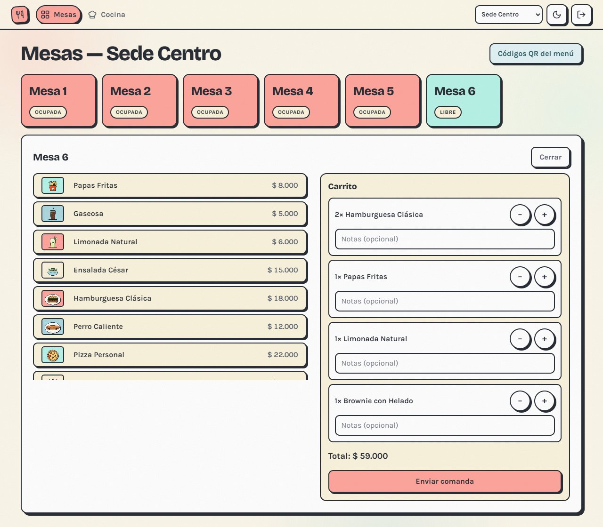
/mesas: mesas de la Sede Centro y toma del pedido de la Mesa 6, con catálogo, carrito y notas por ítem./cocina (KDS): comandas en preparación y listas de mesa, de domicilio y de plataforma (PLT-20482), recibidas en vivo.La caja separa los pedidos listos para cobrar de los que siguen en cocina. Al cobrar, el cajero elige el medio de pago (efectivo o tarjeta) y confirma. La respuesta es inmediata: muestra el número de factura de la sede y el estado DIAN "Validando con la DIAN (simulada) en segundo plano…".
El worker genera el XML, lo guarda en el almacén de objetos, lo envía al proveedor simulado y registra el resultado. El backend reenvía ese resultado a la caja con documento:actualizado, y el recibo cambia solo a Validado (simulado), con el enlace para descargar el XML (Figura 7). El navegador nunca habla con el almacén: el XML se descarga por GET /documentos-fiscales/:id/xml, con control de cadena y de sede.
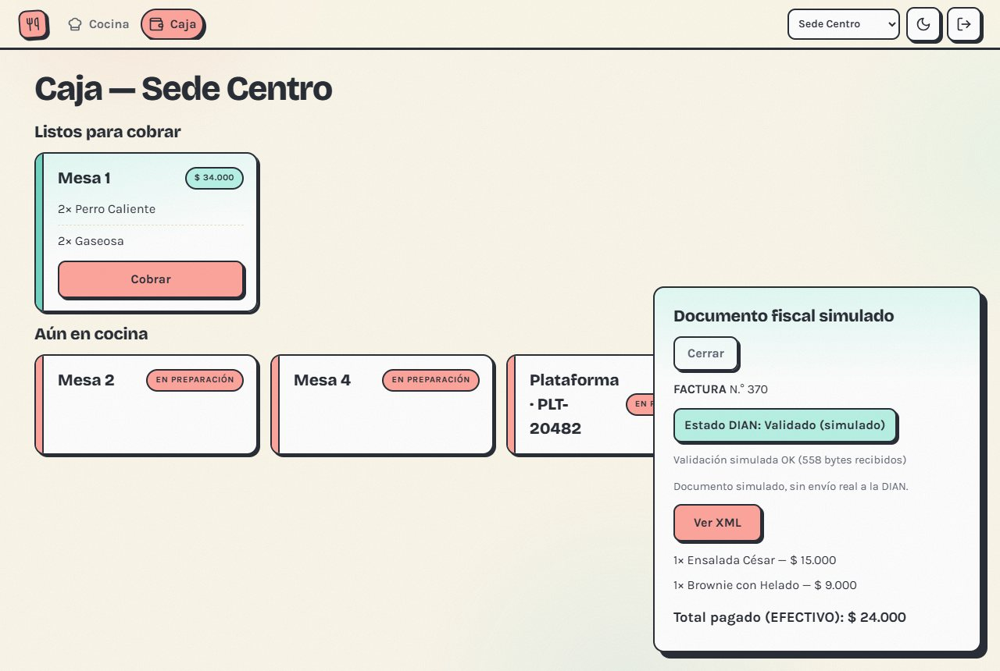
/caja: después de cobrar la Mesa 5, el recibo pasa en vivo de PENDIENTE a "Validado (simulado)", con la factura N.° 370 de la Sede Centro.En los registros del worker de esa misma sesión se ve el comportamiento ante fallas del proveedor: un documento falló tres veces ("Proveedor DIAN (simulado) no disponible"), con esperas crecientes de 4 y 6 s, y se validó en el cuarto intento, sin que la caja esperara.
En /mesas, el botón Códigos QR del menú genera en el navegador un código por mesa, que apunta al menú público de la sede con el número de mesa. Si la cadena tiene subdominio, el código apunta a él. El comensal lo abre en su teléfono sin iniciar sesión ni instalar nada (Figura 8): ve los productos activos por categoría, con foto y precio, y puede pasar a pedir a domicilio.
Las fotos las sube el administrador en /catalogo (JPEG, PNG o WebP de hasta 2 MB). El backend las recorta a 4:3, les quita los metadatos EXIF (por ejemplo, la ubicación del celular) y genera versiones WebP de 800 y 400 px con llaves inmutables. Se sirven con caché larga en Nginx y, opcionalmente, desde CloudFront en la nube. El service worker no las guarda en caché, para no llenar el teléfono.
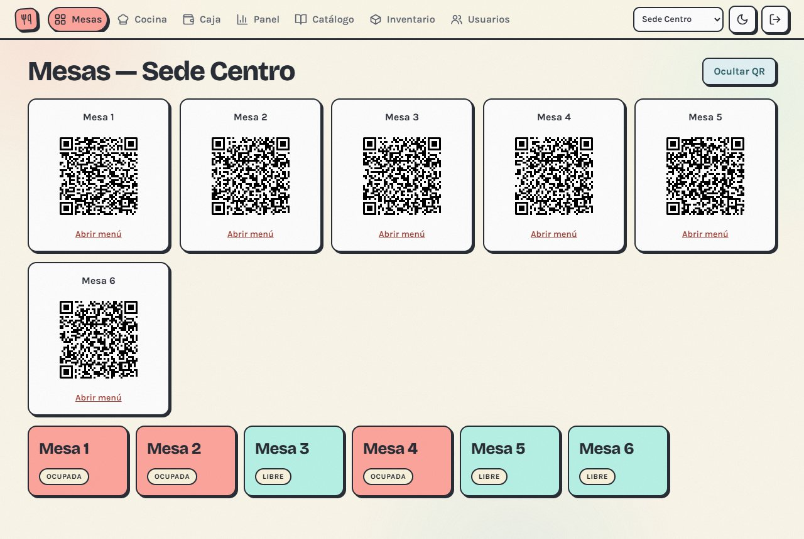
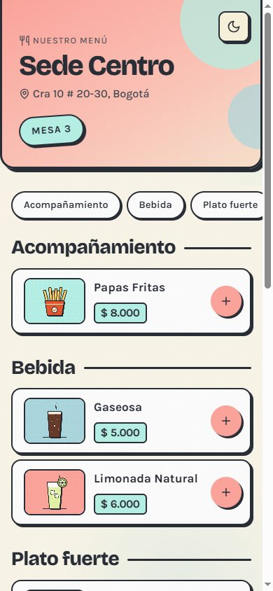
/mesas (izquierda) y menú público de la Sede Centro abierto desde el QR de la Mesa 3, en un viewport de celular (derecha).Desde el menú público, el cliente arma su pedido y deja nombre, teléfono, dirección y, si quiere, su correo. El pedido viaja por POST /public/pedidos/domicilio, sin JWT, idempotente por UUID y con límite de tasa. La cadena se valida contra la sede y, por subdominio, contra el Host. Llega a cocina y a caja marcado como "Domicilio" (Figura 6). Cuando la DIAN simulada valida el documento del cobro, el worker envía el comprobante por correo (Figura 9). El prototipo no incluye pago en línea ni seguimiento del repartidor.
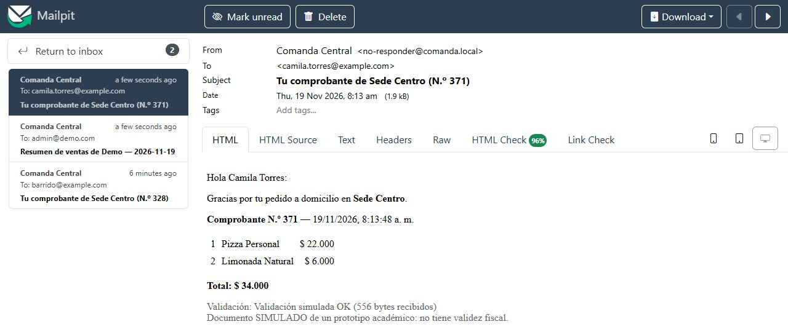
Una plataforma de domicilios conectada a la cadena envía sus pedidos a POST /integraciones/plataformas/pedidos en su propio formato (orderId, storeId, customer e items con sku y qty), autenticada con X-Api-Key. El backend lo traduce a un pedido de canal PLATAFORMA en EN_PREPARACIÓN, con su cliente, y lo envía a cocina sin re-digitación. En la Figura 6 aparece como "Plataforma · PLT-20482".
La idempotencia descansa en la pareja (integración, referencia externa), que es única en la base. Un reenvío devuelve el mismo pedido con duplicate: true, incluso si dos reenvíos llegan a la vez. El acuse de vuelta lo envía el worker al webhook de la integración, con reintentos: el pedido ya está en cocina pase lo que pase con el acuse. La plataforma es la página /simulador-plataforma, que envía pedidos, reenvía el último y muestra los acuses recibidos.
/panel (solo el administrador) consolida las ventas de todas las sedes de la cadena por sede, fecha y canal, con una opción para agrupar por día o por mes (Figura 10). Debajo muestra las ventas por producto y por franja horaria. Las fechas y horas se calculan en la zona America/Bogota.
Los datos salen de la réplica de lectura, y cada cobro llega en vivo por venta:registrada, sin recargar ni hacer polling. El botón Enviar resumen del día por correo encola el mismo consolidado para los administradores de la cadena; a las 23:00 se envía de forma automática.
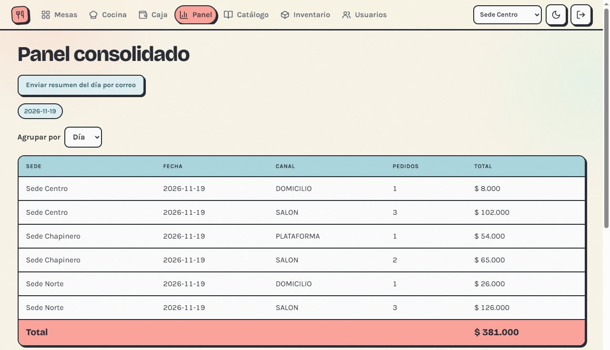
/panel: consolidado del día de las tres sedes por canal (salón, domicilio y plataforma). Debajo, fuera del recorte, están las tablas por producto y por franja horaria.El frontend es una PWA: un service worker sirve la aplicación aunque no haya red, y el catálogo, las mesas y la sede quedan en IndexedDB.
POST /sync./sync devuelve un resultado por elemento (CREADO, DUPLICADO o RECHAZADO), de modo que un lote reenviado no duplica nada y un elemento inválido no tumba al resto. El mesero solo envía pedidos, el cajero solo pagos y el administrador ambos.
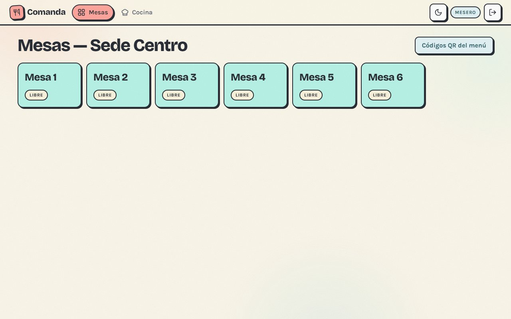
1. En línea: mesas desde el servidor.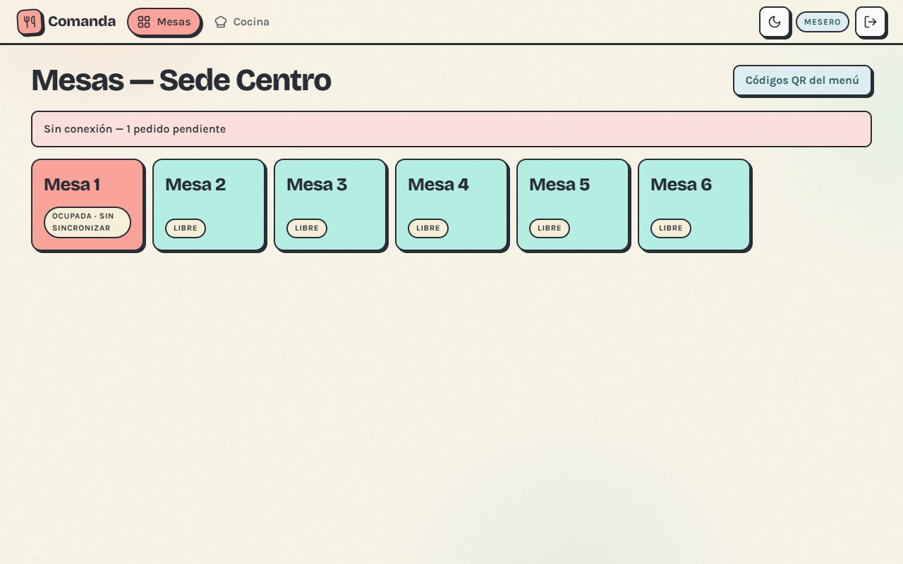
2. Sin red: pedido en cola local; Mesa 1 "sin sincronizar".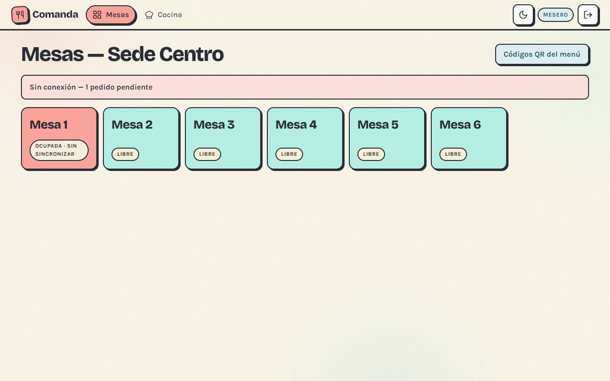
3. Recarga sin red: el service worker sirve la aplicación.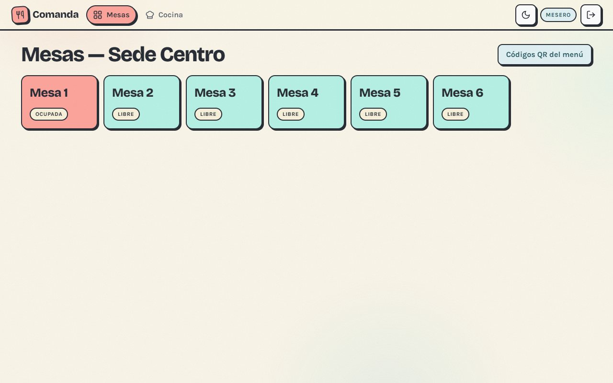
4. Vuelve la red:/sync responde 200 y la cola queda vacía.El cobro sin conexión de la caja está cubierto por 11 pruebas de integración (cobro-offline.spec.ts), entre ellas:
La prueba manual de la caja en modo avión, en un navegador, sigue pendiente. Sin conexión no cargan el menú QR ni entran pedidos de plataforma: lo que se protege es el salón y la caja, que es donde está el dinero.
En /catalogo, el administrador crea, edita y desactiva productos y sus fotos una sola vez para toda la cadena (Figura 12). Desactivar es una baja lógica, porque los pedidos históricos siguen apuntando al producto. Un pedido con un producto ya desactivado se rechaza con 409, aunque el mesero tenga el catálogo viejo en pantalla. El cambio llega en vivo a /mesas de las tres sedes con catalogo:actualizado, y el menú QR lo muestra al cargarse.
Dos pantallas de administración completan la operación (Figura 13). /inventario maneja insumos, existencias por sede y recetas. /usuarios crea meseros y cajeros, les asigna rol y sede, cambia contraseñas y desactiva cuentas. Un usuario con sede asignada solo opera en esa sede; sin sede, elige cualquiera de su cadena.
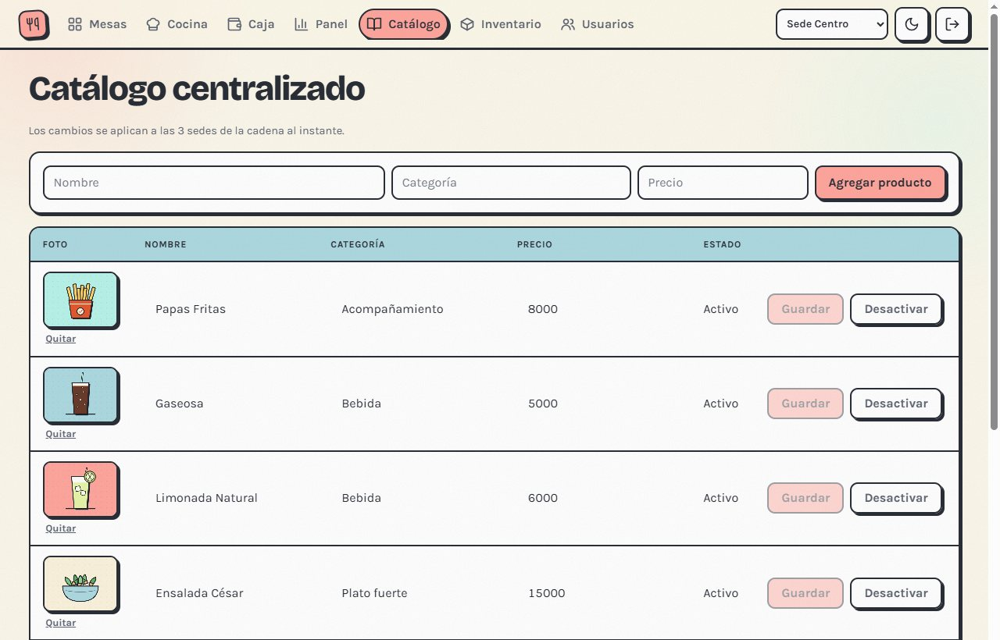
/catalogo: productos de la cadena con foto, categoría, precio y estado. Los cambios se aplican a las tres sedes al instante.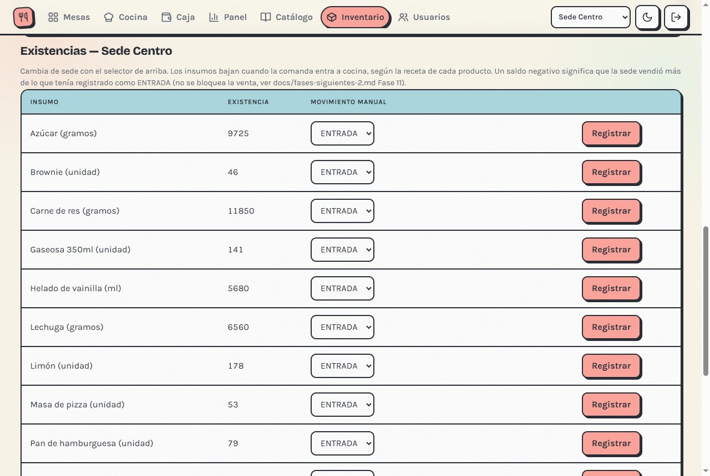
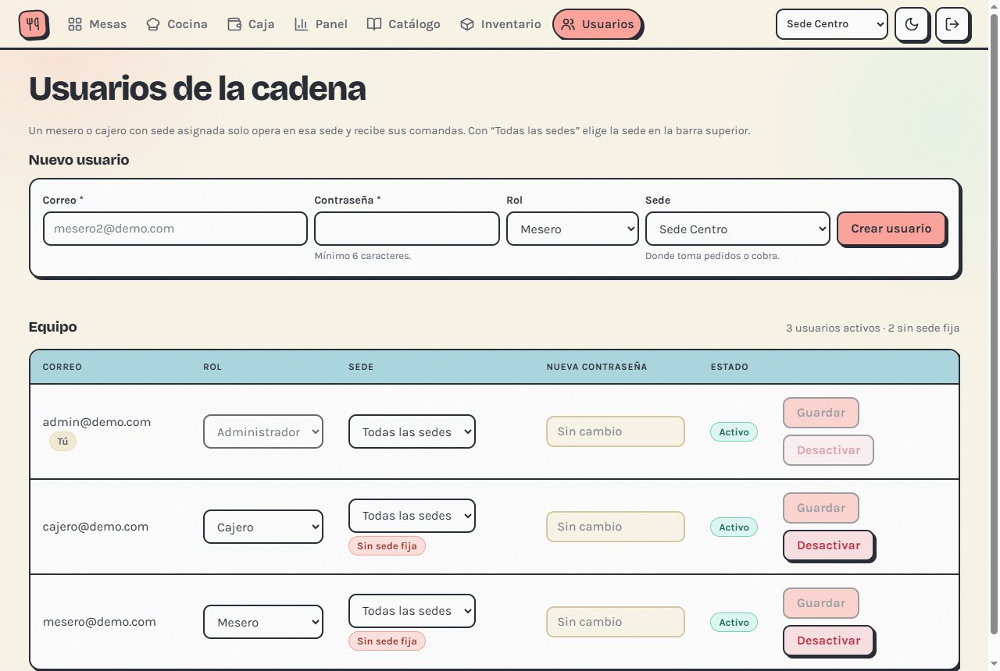
/inventario: existencias de la Sede Centro, que bajan cuando la comanda entra a cocina (izquierda). /usuarios: equipo de la cadena con rol, sede y estado (derecha).La sustentación planteó dos infraestructuras: una para desarrollar (Docker Compose en el PC) y "un VPS pequeño con HTTPS para la beta". Se eligió AWS por su plan gratuito: hasta USD 200 en créditos durante 6 meses. La regla fue que el código no dependa de AWS: lo único que cambia entre el PC y la nube son variables de entorno y archivos de despliegue.
Toda la beta corre en una sola instancia EC2 t3.small (2 vCPU y 2 GB de RAM, más 2 GB de swap) con disco gp3 de 20 GB, en la región us-east-1. Ahí corre el mismo conjunto de contenedores del entorno local, salvo MinIO y Mailpit, que se reemplazan por Amazon S3 y Amazon SES. La instancia tiene IP elástica; DuckDNS publica el dominio y Let's Encrypt emite el certificado, ambos sin costo. El servidor clona el repositorio público al arrancar y descarga las imágenes ya compiladas; desde el PC solo sale el contenido del archivo de variables, que va a SSM.
| Pieza | Local | Beta en AWS |
|---|---|---|
| Almacén de objetos | MinIO | Amazon S3. Solo cambian las variables S3_*; el acceso usa el rol de la instancia, sin llaves. |
| Correo | Mailpit | Amazon SES por SMTP 587 (STARTTLS), en sandbox. |
| Certificado TLS | Autofirmado, generado al arrancar el contenedor | Let's Encrypt, para el dominio y el subdominio de la cadena, con renovación programada. |
| DNS | localhost y *.localhost | DuckDNS hacia la IP elástica. |
| Secretos | Archivo .env (fuera del repositorio) | SSM Parameter Store. El despliegue arma el archivo de variables en cada ejecución. |
| Logs y métricas | docker compose logs | CloudWatch Logs, agente de CloudWatch y métricas propias de las colas. |
| Imágenes | Construidas en el PC, en modo desarrollo | Imágenes de producción publicadas en GHCR por el CI. |
Los Dockerfiles de desarrollo recompilan al vuelo; los de producción son multi-etapa. La imagen del backend ejecuta el código compilado y la usan tanto el backend como el worker; la de Nginx trae el frontend ya compilado. El archivo docker-compose.prod.yml no monta carpetas del PC, no incluye MinIO ni Mailpit y solo publica los puertos 80 y 443. El endurecimiento se controla por variables, sin cambiar código, y se probó antes de subir:
Las imágenes no contienen secretos (.env* está excluido del contexto de construcción), y por eso se publican como paquetes públicos.
main). Lint, tipos y pruebas unitarias del backend; lint y compilación del frontend; y el stack completo con Docker Compose: datos de demostración, todas las pruebas del backend contra la base real y la prueba de punta a punta por Nginx. En los pull requests verifica además que las imágenes de producción compilan. La guía del repositorio indica proteger main con estos trabajos como requisito, para que un pull request en rojo no se pueda integrar.main queda en verde). Publica cuatro imágenes en GitHub Container Registry: backend, migraciones, Nginx y respaldo. Si el despliegue está habilitado, asume por OIDC un rol de IAM que solo puede enviar un comando de SSM a esa instancia, y ejecuta deploy/desplegar.sh <commit>: arma las variables desde SSM, descarga las imágenes, corre las migraciones y levanta todo con --wait.Cada commit de main deja imágenes etiquetadas, así que volver a una versión anterior es desplegar ese commit.
/comanda/beta/* y escribir en sus grupos de logs. El rol de GitHub solo puede enviar comandos de SSM a esa instancia y leer su resultado. El rol de GitHub solo lo puede asumir el environment beta del repositorio.Los logs de todos los contenedores van a CloudWatch Logs. El agente de CloudWatch reporta memoria y disco. El worker publica cada minuto, en formato EMF y sin SDK, cuántos documentos fiscales están atascados en PENDIENTE y cuántos trabajos hay en espera o fallidos en cada cola. Un script crea las alarmas, con aviso por correo vía SNS:
| Alarma | Condición y respuesta (según el runbook) |
|---|---|
| Sin servicio | El chequeo de Route 53 a /api/health falla. Revisar contenedores; con un backend caído el servicio sigue por el otro. |
| Instancia caída | Fallan los chequeos de estado de EC2. Reiniciar; si no vuelve, detener y arrancar (cambia de host físico y conserva IP y volúmenes). |
| CPU alta · memoria alta | Identificar el contenedor con docker stats; si es carga real, subir el tipo de instancia. |
| Disco lleno | Limpiar imágenes de despliegues anteriores o ampliar el volumen EBS. |
| Cola fiscal atascada | Documentos en PENDIENTE por más de 5 minutos, o el worker dejó de reportar. Revisar worker y Redis; la caja no se bloquea. |
| Presupuesto (AWS Budgets) | Gasto sobre los umbrales definidos. Revisar Cost Explorer y apagar lo que no se use. |
El runbook (docs/runbook.md) describe qué hacer ante cada alarma y cómo restaurar la base desde un respaldo de S3. También cubre la recreación de la réplica y el regreso a una versión anterior.
Se evitaron a propósito los servicios que consumen créditos aunque nadie los use: NAT Gateway, balanceador de carga administrado, RDS y ElastiCache. La alta disponibilidad administrada queda como trabajo futuro (§10).
| Recurso | Encendida 24/7 (mes) | Apagada (mes) |
|---|---|---|
EC2 t3.small (USD 0,0208 por hora) | ≈ USD 15,20 | USD 0 |
| Disco EBS gp3 de 20 GB | ≈ USD 1,60 | ≈ USD 1,60 |
| IP elástica (IPv4 pública) | ≈ USD 3,65 | ≈ USD 3,65 |
| S3, SES, SSM, transferencia | < USD 0,20 | < USD 0,10 |
| CloudWatch y chequeo de Route 53 | USD 0,50 – 3,50 | ≈ USD 0,50 |
| DuckDNS, Let's Encrypt, GitHub y GHCR | USD 0 | USD 0 |
| Total aproximado | ≈ USD 21 | ≈ USD 6 |
Fuente: estimación de docs/tutorial-migracion-aws.md. Con los créditos del plan gratuito, la beta encendida 24/7 durante 6 meses cuesta ≈ USD 126 de los USD 200 disponibles. El costo real consumido no se ha consolidado aún (§10).
Todo lo que se podía preparar sin cuenta de AWS se probó antes en el PC: el compose de producción con la prueba de punta a punta en "TODO OK", los scripts con shellcheck y los workflows con actionlint. Aun así, la migración real (17–19 de noviembre) encontró tres problemas que solo aparecen contra la nube:
/etc/cron.d no existe hasta instalar cronie, así que el script de arranque fallaba sin programar la renovación. Ahora instala cronie primero.repo:BlowyXx72@…/Comanda@…:environment:beta), y la política de confianza solo aceptaba el formato clásico; el despliegue fallaba con "Not authorized to perform sts:AssumeRoleWithWebIdentity". La política ahora acepta ambos formatos (rama fix/oidc-sub-inmutable).En los tres casos, el tutorial y el runbook se corrigieron junto con el código.
El backend tiene 101 pruebas con vitest. Las unitarias prueban la lógica aislada; las de integración corren contra la base real (y su réplica) y limpian lo que crean. Resultado de la ejecución del 19/11/2026:
$ docker compose exec backend-1 npx vitest run
Test Files 20 passed (20)
Tests 101 passed (101)
Duration 36.12s
| Área | Qué verifican (archivos) | Pruebas |
|---|---|---|
| Aislamiento de datos | RLS sin cadena, entre cadenas, WITH CHECK y UPDATE; réplica en recuperación, de solo lectura y con RLS (rls-aislamiento, replica-solo-lectura) | 9 |
| Cobro, numeración e inventario | Bloques por caja, cobros sin conexión, duplicados, hora de la caja, descuento por receta al pedir y al cobrar (cobro-offline, cobro-inventario, inventario-al-pedir) | 18 |
| Integraciones y sincronización | Idempotencia por orderId, API key inválida o ausente, lotes de /sync (plataforma-idempotencia, guard de API key, sync.service) | 9 |
| Worker | Documento validado, rechazado y reintentado; comprobante solo con correo; XML bajo el prefijo de retención; métricas de colas (procesador-fiscal, procesador-correo, monitor-colas) | 15 |
| Tiempo real | Quien pide sede:unirse apenas conecta recibe las comandas (10 conexiones seguidas); un mesero no entra a otra sede; token inválido rechazado en el handshake (realtime-sede) | 3 |
| Multi-tenant por subdominio | Resolución del Host, menú, domicilio y login restringidos a la cadena (subdominio, subdominio-cadena) | 16 |
| Usuarios, sede y catálogo | Gestión de usuarios, operación limitada a la sede asignada, validación de productos (users.service, sede-usuario, producto-dto) | 16 |
| Imágenes y reportes | JPEG, PNG y WebP a WebP 4:3 de 800 y 400 px sin EXIF; reportes en hora de Bogotá (procesar-imagen, reports.service) | 14 |
| Base | Controlador raíz (app.controller) | 1 |
| Total (20 archivos) | 101 | |
backend/scripts/prueba-integracion.mjs recorre el sistema como lo haría un usuario, pasando por Nginx y TLS, y termina en "TODO OK" o lista lo que falló. Corre en el CI en cada pull request y, con el stack de producción, también se puede lanzar contra la beta. Verifica:
/health; sedes y productos activos.X-Api-Key responde 401; el pedido entra en otra sede y su reenvío es idempotente.La última ejecución documentada con las dos partes integradas (27/10/2026) terminó en "TODO OK". Esa misma integración también pasó la compilación de tipos, el lint de backend y frontend y la compilación de producción del frontend.
Las fallas se simularon deteniendo contenedores o cambiando la configuración, nunca el código.
| Escenario | Resultado | Lectura |
|---|---|---|
Cae backend-2 | La API sigue respondiendo 200 por backend-1; la primera petición tarda 2 s (reintento dentro de Nginx) y las siguientes 6 ms. Los sockets se reconectan solos. | Tolerado |
| Caen las dos instancias | La API responde 502. Al levantarlas, vuelve a 200. | Esperado |
| DIAN simulada caída (tasa de falla 100 %) | El cobro responde de inmediato con el documento en PENDIENTE; el worker reintenta con esperas crecientes (+4 s, +6 s…). Al restaurar la configuración, los documentos se validan. | Tolerado |
| Se cae Redis | En la prueba del 20/10/2026 la API dejó de responder mientras Redis estuvo caído y se recuperó sola unos 20 s después de levantarlo. El runbook describe la recuperación; Redis guarda colas con AOF y los documentos PENDIENTE se re-encolan. | Punto único de falla |
| Sede sin red (mesero) | Pedido en cola local, recarga sin red servida por el service worker y sincronización al volver la red con el mismo UUID en la base (Figura 11). | Tolerado |
Fuente: docs/EVIDENCIA_EXPOSICION.md (salidas reales del 20/10/2026) y registros del worker del 19/11/2026.
La propuesta dimensionó el servicio para el cierre del año 1: 20 cadenas y 60 sedes, unas 9.000 ventas al día, ~300 usuarios concurrentes en la hora pico y un diseño para 1.000 sesiones concurrentes (margen ×3). Su conclusión fue que "el reto del sistema es la disponibilidad y la sincronización, no el volumen". El prototipo se construyó sobre esa conclusión. La Tabla 17 muestra cómo responde a cada cifra y qué falta medir.
| Cifra de la propuesta | Cómo la aborda el prototipo | Verificación |
|---|---|---|
| 1.000 sesiones concurrentes de diseño (~300 en el pico, ~180 WebSocket persistentes) | Dos instancias detrás de Nginx; Redis permite agregar instancias sin cambiar código, porque comparten los eventos. | Sin medir |
| ~2 TPS en ráfaga | El cobro no espera a terceros: el trabajo pesado va a colas. Los reportes van a la réplica. | Sin medir |
| ~30 KB por venta (incluye XML firmado de ~20 KB) | El XML simulado pesa ≈ 0,5 KB ("556 bytes recibidos"). El firmado y real sería mayor; se guarda en el almacén de objetos, no en la base. | Observado |
| < 100 kbps por sede; tráfico dominado por las imágenes del menú | Fotos en WebP de 400 y 800 px, caché inmutable y gzip; HTTP/2 multiplexa las peticiones; CDN preparada como opción. | Sin medir |
| 80–120 ms de ida y vuelta Bogotá–nube ("a confirmar por medición") | Región us-east-1. La validación DIAN corre en segundo plano y la interacción crítica viaja por un WebSocket ya establecido. | Sin medir |
| Retención fiscal de 5 años | Regla de ciclo de vida en S3 sobre fiscal/, el prefijo bajo el que el worker guarda los XML (§5.8). | Implementado |
Las pruebas de carga sobre la beta y la medición de latencia desde Bogotá (Fase 19 del plan) no se ejecutaron a la fecha de este informe. Son el paso siguiente para validar estas cifras. Con una sola instancia t3.small no se espera sostener la meta completa de 1.000 sesiones: el objetivo de esa fase es medir hasta dónde llega y documentarlo.
localStorage; en producción se evaluaría una cookie httpOnly.Trabajar por fases pequeñas, con contratos de integración escritos y una regla explícita contra inventar funcionalidades, permitió que dos personas avanzaran en paralelo sin perder trazabilidad entre lo propuesto y lo construido. Este documento es el resultado de esa trazabilidad.
docs/prototipo-slice.md, docs/EVIDENCIA_EXPOSICION.md, docs/despliegue-aws.md, docs/datos-aws.md, docs/runbook.md, docs/tutorial-migracion-aws.md.ngx_http_upstream_module y ngx_http_limit_req_module).Rutas del backend. Detrás de Nginx se publican con el prefijo /api. "JWT" significa cualquier usuario autenticado de la cadena; los roles son ADMIN, CAJERO y MESERO.
| Método | Ruta | Acceso | Descripción |
|---|---|---|---|
| POST | /auth/login | Público | Inicio de sesión; devuelve el JWT y el usuario |
| GET | /auth/me | JWT | Valida la sesión y devuelve el usuario vigente |
| GET | /usuarios | ADMIN | Usuarios de la cadena |
| POST | /usuarios | ADMIN | Crea un usuario con rol y sede |
| PATCH | /usuarios/:id | ADMIN | Cambia rol, sede, estado o contraseña |
| GET | /cadena | JWT | Cadena del usuario y URL pública de su subdominio |
| GET | /public/cadena | Público | Cadena del subdominio por el que se entró (404 si no existe) |
| GET | /sedes | JWT | Sedes de la cadena (solo la suya si tiene sede asignada) |
| GET | /sedes/:id/mesas | JWT | Mesas de una sede |
| GET | /productos | JWT | Productos activos (ADMIN puede incluir inactivos) |
| POST | /productos | ADMIN | Crea un producto |
| PATCH | /productos/:id | ADMIN | Edita un producto |
| DELETE | /productos/:id | ADMIN | Desactiva un producto (baja lógica) |
| POST | /productos/:id/imagen | ADMIN | Sube o reemplaza la foto (JPEG, PNG o WebP, máx. 2 MB) |
| DELETE | /productos/:id/imagen | ADMIN | Quita la foto |
| POST | /pedidos | MESERO, ADMIN | Crea un pedido (idempotente por UUID) en EN_PREPARACIÓN |
| GET | /pedidos?sedeId= | JWT | Pedidos activos de una sede |
| GET | /pedidos/:id | JWT | Detalle de un pedido |
| PATCH | /pedidos/:id/estado | JWT | Avanza un estado (nunca a PAGADO) |
| POST | /pagos | CAJERO, ADMIN | Cobra un pedido LISTO: pago, documento fiscal y mesa libre |
| POST | /pagos/rangos-offline | CAJERO, ADMIN | Reserva un bloque de consecutivos para cobrar sin conexión |
| POST | /sync | MESERO, CAJERO, ADMIN | Aplica un lote de pedidos o pagos hechos sin conexión |
| GET | /documentos-fiscales/:id/xml | CAJERO, ADMIN | Descarga el XML (simulado) del almacén de objetos |
| GET | /menu/:cadenaId/:sedeId | Público | Menú de una sede, por categoría |
| GET | /menu/imagenes/* | Público | Foto de un producto, con caché larga |
| POST | /public/pedidos/domicilio | Público | Pedido de domicilio (idempotente por UUID) |
| POST | /integraciones/plataformas/pedidos | X-Api-Key | Pedido de plataforma (idempotente por orderId) |
| GET | /integraciones/plataformas/catalogo | X-Api-Key | Sedes y productos activos para armar el menú de la plataforma |
| POST | /simulador-plataforma/:id/acuses | Interno (worker) | Webhook simulado de la plataforma |
| GET | /simulador-plataforma/acuses | X-Api-Key | Últimos acuses recibidos por la plataforma simulada |
| GET | /insumos | ADMIN | Insumos de la cadena |
| POST | /insumos | ADMIN | Crea un insumo |
| PATCH | /insumos/:id | ADMIN | Edita un insumo |
| GET | /productos/:productoId/receta | ADMIN | Receta de un producto |
| PUT | /productos/:productoId/receta | ADMIN | Reemplaza la receta completa |
| GET | /sedes/:sedeId/inventario | ADMIN | Existencias por insumo en una sede |
| POST | /inventario/movimientos | ADMIN | Movimiento manual (ENTRADA o MERMA) |
| GET | /reportes/ventas | CAJERO, ADMIN | Ventas del día de una sede |
| GET | /reportes/consolidado | ADMIN | Consolidado por sede, día o mes y canal |
| GET | /reportes/productos | ADMIN | Ventas por producto en un rango |
| GET | /reportes/franjas | ADMIN | Ventas por hora del día en un rango |
| POST | /correo/resumen-diario | ADMIN | Encola el resumen diario para los ADMIN de la cadena |
| GET | /health | Público | Salud real: consulta a PostgreSQL y PING a Redis |
| GET | / | Público | Respuesta base del servicio |
Solo se necesitan Docker con Docker Compose y Git: backend y frontend corren en contenedores, sin Node instalado en el equipo.
# 1. Configuración y arranque (espera a que todo esté sano) cp .env.example .env docker compose up -d --wait # 2. Datos de demostración (solo la primera vez; borra y recrea los datos) docker compose exec backend-1 npx prisma db seed docker compose exec backend-1 npm run seed:imagenes # 3. Pruebas docker compose exec backend-1 npx vitest run docker compose exec -e NODE_TLS_REJECT_UNAUTHORIZED=0 backend-1 node scripts/prueba-integracion.mjs
| Servicio | Dirección | Uso |
|---|---|---|
| Aplicación (Nginx) | https://localhost:8443 | Entrada única con TLS 1.3, HTTP/2 y WSS; certificado autofirmado (aceptar la advertencia) |
| Frontend directo | http://localhost:5173 | Servidor de Vite, sin TLS |
| Swagger | http://localhost:3000/api/docs | Documentación interactiva de la API |
| Mailpit | http://localhost:8025 | Bandeja de los correos enviados |
| MinIO | http://localhost:9001 | Consola del almacén de objetos |
Usuarios de demostración (creados por el seed, solo para el entorno local): admin@demo.com / admin123, cajero@demo.com / cajero123 y mesero@demo.com / mesero123. La cadena "Demo" tiene tres sedes (Centro, Chapinero y Norte), seis mesas por sede y ocho productos con receta y foto.
Flujo sugerido para la demostración.
/mesas, enviar una comanda./cocina sin recargar y marcarla LISTO./caja, cobrarla y ver el documento pasar a "Validado (simulado)"./panel./mesas.El despliegue en AWS, paso a paso, está en docs/tutorial-migracion-aws.md (con la versión PDF en docs/Migracion/) y en docs/despliegue-aws.md.